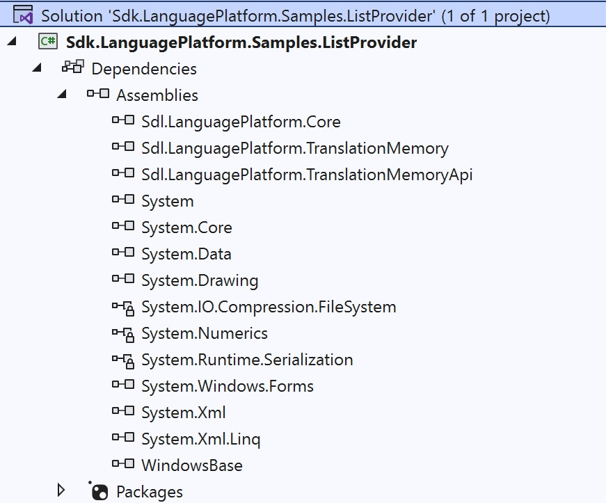

Setting up the Project
To implement a custom translation provider plug-in, create a new class library project in Microsoft Visual Studio 2019.
Install the SDK on your Development Machine
Before you start developing plug-ins for Trados Studio, you should make sure that the SDK is installed on your development PC. The SDK installer will add new templates to your Microsoft Visual Studio 2019 environment, as illustrated in the screenshot below. For the type of plug-in discussed in this chapter, we require the Translation Provider Plug-in type.
Please also refer to Setting up a Development Machine.
Set up your Translation Provider Plug-in Project
Start by creating a new project in Microsoft Visual Studio 2019. In the New Project dialog box select the Translation Provider Plug-in template. Rename the project to Sdl.Sdk.LanguagePlatform.Samples.ListProvider:
Leveraging the template makes sure that your project contains the minimum amount of code (i.e. the stubs) that is required for building a valid translation provider. Of course, the stubs will not contain any of the required application logic. Below you see the items that are by default included in the project:

Your implementation might require additional classes, e.g. a form for implementing a user interface through which you configure any plug-in settings. (When file TMs, for example, are selected for a project, a dialog box is raised to allow users to select the TM files.) In our implementation, we will require a form in which users can select the delimited list file and enter the delimiter character. (See also Implementing the Plug-in User Interface).
Apart from the stubs, the project template will also contain the required references, which are listed below:
- Sdl.Core.PluginFramework
- Sdl.LanguagePlatform.Core
- Sdl.LanguagePlatform.TranslationMemory
- Sdl.LanguagePlatform.TranslationMemoryApi

Note
The line in the PluginProperties class file in the Properties sub-folder. You will see that this file contains a string value called Plugin_Name. This single plug-in attribute is what fundamentally makes this project a plug-in project. Plugin_Name is a resource string defined in PluginResources.resx, which is also part of the template. (See also The Resources File).
using Sdl.Core.PluginFramework;
// TODO: edit the Plugin_Name string in PluginResources.resx to change the name of your plug-in
[assembly: Plugin("Plugin_Name")]